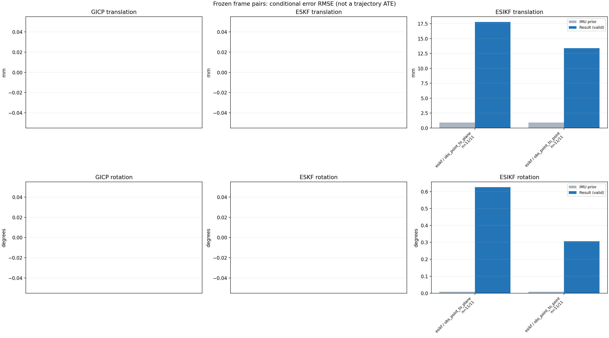

20261015_112659_forward · depth=disparity_cache · cache=c5dafbee74234a148682
模型视差：/home/ubuntu22/slam/SIO_SLAM/models/tensorrt/disp_896x448_fp16.plan；engine SHA256=604cf6ac1f705c877260711730dd5d2d58c2a21f3020c03c668401ef7fb1e768。输入为生产裁剪与光照处理后的 RGB 0..255；此实验使用原始浮点像素视差，不应用完整前端的邻域视差后处理。
原始 ONNX SHA256：e9f49736a65d68d06681add463866b6defdf78fdd7f4f50f6cc941b682fdc0bc。
代价体图改写验证：ONNX Runtime 固定随机特征输入，最大绝对误差 0；该项检查图改写，完整模型精度仍需由录制数据评估。
配准代码版本：744ac2d993ae629b0cc44a3b1d995e04ab4fad48；观测生成版本：744ac2d993ae629b0cc44a3b1d995e04ab4fad48。
固定图像对与纯 IMU 先验；ESKF 回放固定 GICP 观测，ESIKF 直接读取点云。真值只用于此报告。
同时查看 converged 与 solver_status：上游默认 Stereo 在 max_iter / stopped_at_minimum 时也可能置 converged=true。valid 表示输入检查通过，不表示精度提升。欧氏 GICP 未提供独立的点距 RMSE，该列显示 NaN。
误差按每对图像的锚点计算，单位 m / degrees。此处 RMSE 不是全序列 ATE；末帧受同一锚点条件约束。NIS 与条件马氏距离是诊断量，少量相关图像对不能用于宣称协方差已校准。
全部指标 CSV · R / P 矩阵 CSV · Stereo 求解逐轮 CSV · ESIKF 逐轮轨迹 CSV · 末轮 H / R / K_pose 矩阵 CSV · 配置快照 · 矢量图
unflagged 排除纯惯性先验平移误差超过 50 mm 的图像对；whitened 为误差按协方差白化后的每自由度均值，协方差与实际误差相符时约为 1。prior_whitened 用真值误差只检验先验 P；NIS 为 ESIKF 首轮 rᵀ(P+R)⁻¹r，不用真值，检验的是 P+R 的总量，单靠它分不开 P 与 R，偏差、错误对应和线性化误差也会抬高它。观测方差超过先验方差 1e+04 倍的方向视为不可观，从 NIS 及其自由度中去掉（nis_dof）。一致时 nis_per_dof 均值约 1、nis_over_chi2_median 中位数约 1；帧对少且共享序列，超出 95% 分位的比例只作参考。
| stage | method | variant | valid | total | result_translation_rmse_m | result_rotation_rmse_deg | result_translation_median_m | result_rotation_median_deg | result_translation_rmse_unflagged_m | result_rotation_rmse_unflagged_deg | improved_translation | improved_rotation | posterior_whitened_by_P_rot_mean | posterior_whitened_by_P_trans_mean | prior_whitened_by_P_rot_mean | prior_whitened_by_P_trans_mean | nis_per_dof_mean | nis_over_chi2_median_median | nis_exceeds_chi2_95_fraction |
|---|---|---|---|---|---|---|---|---|---|---|---|---|---|---|---|---|---|---|---|
| esikf | esikf | obs_point_to_plane | 11 | 11 | 0.017767 | 0.62641 | 0.01469 | 0.50511 | 0.017767 | 0.62641 | 0 | 0 | 141.59 | 86.392 | 6.1668e-07 | 5.8377e-06 | 0.0048622 | 0.0010493 | 0 |
| esikf | esikf | obs_point_to_point | 11 | 11 | 0.013381 | 0.30731 | 0.013194 | 0.15128 | 0.013381 | 0.30731 | 1 | 0 | 284.08 | 213.71 | 6.1668e-07 | 5.8377e-06 | 0.00025955 | 0.00023254 | 0 |

| stage | case | method | variant | status | solver_status | inliers | converged | covariance_convention | covariance_from_hessian | fitness | registration_rmse_m | prior_trans_error_m | result_trans_error_m | prior_rot_error_deg | result_rot_error_deg | prior_flagged | R_rot_trace_rad2 | R_pos_trace_m2 | nis_regularized | posterior_whitened_by_P_rot | posterior_whitened_by_P_trans | prior_whitened_by_P_rot | prior_whitened_by_P_trans | nis_per_dof | nis_dof |
|---|---|---|---|---|---|---|---|---|---|---|---|---|---|---|---|---|---|---|---|---|---|---|---|---|---|
| esikf | static_a096 | esikf | obs_point_to_point | updated | converged | 17517 | 1 | 1 | 0 | 0 | 3.5054e-05 | 0.01078 | 0.010656 | 0.1114 | 0 | 1.0753e-07 | 8.7385e-07 | nan | 83.819 | 148.56 | 1.1529e-06 | 4.0335e-08 | 0.00013755 | 6 | |
| esikf | static_a096 | esikf | obs_point_to_plane | updated_not_converged | max_iterations | 17616 | 0 | 1 | 0 | 0 | 3.5054e-05 | 0.01469 | 0.010656 | 0.5547 | 0 | 8.039e-07 | 3.5842e-06 | nan | 104.67 | 50.429 | 1.1529e-06 | 4.0335e-08 | 0.00047248 | 6 | |
| esikf | static_a100 | esikf | obs_point_to_point | updated | converged | 17255 | 1 | 1 | 0 | 0 | 3.3998e-05 | 0.0096054 | 0.0012052 | 0.14552 | 0 | 1.1342e-07 | 9.0005e-07 | nan | 54.071 | 112.71 | 1.4746e-08 | 3.3048e-08 | 0.00017847 | 6 | |
| esikf | static_a100 | esikf | obs_point_to_plane | updated | converged | 17429 | 1 | 1 | 0 | 0 | 3.3998e-05 | 0.0070771 | 0.0012052 | 0.4378 | 0 | 7.8239e-07 | 3.5998e-06 | nan | 75.65 | 12.711 | 1.4746e-08 | 3.3048e-08 | 0.0020573 | 6 | |
| esikf | static_a104 | esikf | obs_point_to_point | updated | converged | 17460 | 1 | 1 | 0 | 0 | 6.6207e-05 | 0.016102 | 0.003029 | 0.16956 | 0 | 1.0857e-07 | 8.391e-07 | nan | 176.13 | 330.93 | 9.3141e-08 | 9.4809e-08 | 0.00040338 | 6 | |
| esikf | static_a104 | esikf | obs_point_to_plane | updated | converged | 17360 | 1 | 1 | 0 | 0 | 6.6207e-05 | 0.022397 | 0.003029 | 0.53344 | 0 | 7.8844e-07 | 3.2985e-06 | nan | 94.432 | 110.97 | 9.3141e-08 | 9.4809e-08 | 0.0036156 | 6 | |
| esikf | static_a108 | esikf | obs_point_to_point | updated | converged | 17854 | 1 | 1 | 0 | 0 | 7.6941e-05 | 0.014134 | 0.0031611 | 0.17606 | 0 | 1.0271e-07 | 8.1881e-07 | nan | 143.28 | 241.26 | 1.0143e-07 | 1.0002e-07 | 0.00014606 | 6 | |
| esikf | static_a108 | esikf | obs_point_to_plane | updated_not_converged | max_iterations | 17800 | 0 | 1 | 0 | 0 | 7.6941e-05 | 0.015581 | 0.0031611 | 0.31546 | 0 | 7.3815e-07 | 3.1624e-06 | nan | 55.112 | 69.309 | 1.0143e-07 | 1.0002e-07 | 0.00057802 | 6 | |
| esikf | static_a112 | esikf | obs_point_to_point | updated_not_converged | max_iterations | 17803 | 0 | 1 | 0 | 0 | 0.00011251 | 0.019051 | 0.0067165 | 0.66129 | 0 | 1.092e-07 | 8.2623e-07 | nan | 1041 | 420.01 | 4.5783e-07 | 2.3852e-07 | 0.00020727 | 6 | |
| esikf | static_a112 | esikf | obs_point_to_plane | updated | converged | 17590 | 1 | 1 | 0 | 0 | 0.00011251 | 0.0077445 | 0.0067165 | 0.27369 | 0 | 7.3268e-07 | 3.1752e-06 | nan | 27.861 | 16.809 | 4.5783e-07 | 2.3852e-07 | 0.00091669 | 6 | |
| esikf | static_a116 | esikf | obs_point_to_point | updated_not_converged | max_iterations | 17324 | 0 | 1 | 0 | 0 | 0.00016571 | 0.02046 | 0.0008834 | 0.56727 | 0 | 1.0686e-07 | 8.5525e-07 | nan | 672.71 | 431.67 | 7.9185e-09 | 4.914e-07 | 0.00027014 | 6 | |
| esikf | static_a116 | esikf | obs_point_to_plane | updated_not_converged | max_iterations | 17284 | 0 | 1 | 0 | 0 | 0.00016571 | 0.029177 | 0.0008834 | 0.8976 | 0 | 7.536e-07 | 3.3527e-06 | nan | 334.86 | 222.8 | 7.9185e-09 | 4.914e-07 | 0.00087661 | 6 | |
| esikf | static_a120 | esikf | obs_point_to_point | updated | converged | 17503 | 1 | 1 | 0 | 0 | 0.00019527 | 0.012443 | 0.0059755 | 0.15128 | 0 | 1.0411e-07 | 8.2372e-07 | nan | 136.07 | 194.81 | 3.6222e-07 | 5.4827e-07 | 0.00025524 | 6 | |
| esikf | static_a120 | esikf | obs_point_to_plane | updated | converged | 17585 | 1 | 1 | 0 | 0 | 0.00019527 | 0.014072 | 0.0059755 | 0.50511 | 0 | 7.3724e-07 | 3.1729e-06 | nan | 157.65 | 44.932 | 3.6222e-07 | 5.4827e-07 | 0.00093533 | 6 | |
| esikf | static_a124 | esikf | obs_point_to_point | updated_not_converged | max_iterations | 17477 | 0 | 1 | 0 | 0 | 0.00022215 | 0.013194 | 0.0020946 | 0.3794 | 0 | 1.0636e-07 | 8.042e-07 | nan | 667.2 | 220.27 | 4.4495e-08 | 5.8012e-07 | 0.00013988 | 6 | |
| esikf | static_a124 | esikf | obs_point_to_plane | updated | converged | 17670 | 1 | 1 | 0 | 0 | 0.00022215 | 0.027233 | 0.0020946 | 1.1401 | 0 | 7.0435e-07 | 3.1003e-06 | nan | 400.8 | 257.69 | 4.4495e-08 | 5.8012e-07 | 0.0024801 | 6 | |
| esikf | static_g128 | esikf | obs_point_to_point | updated | converged | 17177 | 1 | 1 | 0 | 0 | 0.0015957 | 0.0038129 | 0.017755 | 0.072472 | 0 | 1.1243e-07 | 9.0759e-07 | nan | 9.5326 | 17.908 | 3.1946e-06 | 2.4948e-05 | 0.00016981 | 6 | |
| esikf | static_g128 | esikf | obs_point_to_plane | updated | converged | 17281 | 1 | 1 | 0 | 0 | 0.0015957 | 0.022047 | 0.017755 | 0.85526 | 0 | 7.8111e-07 | 3.3687e-06 | nan | 212.36 | 113.82 | 3.1946e-06 | 2.4948e-05 | 0.0062239 | 6 | |
| esikf | static_g136 | esikf | obs_point_to_point | updated | converged | 17175 | 1 | 1 | 0 | 0 | 0.0017487 | 0.0011273 | 0.0092756 | 0.036224 | 0 | 1.1099e-07 | 8.8445e-07 | nan | 3.4037 | 1.2801 | 8.7119e-07 | 2.1241e-05 | 0.00027422 | 6 | |
| esikf | static_g136 | esikf | obs_point_to_plane | updated | converged | 17336 | 1 | 1 | 0 | 0 | 0.0017487 | 0.0040311 | 0.0092756 | 0.25338 | 0 | 7.4975e-07 | 3.3568e-06 | nan | 37.749 | 3.7387 | 8.7119e-07 | 2.1241e-05 | 0.034585 | 6 | |
| esikf | static_g144 | esikf | obs_point_to_point | updated_not_converged | max_iterations | 17555 | 0 | 1 | 0 | 0 | 0.0018492 | 0.013255 | 0.0069093 | 0.11409 | 0 | 1.0679e-07 | 8.1578e-07 | nan | 137.66 | 231.39 | 4.8293e-07 | 1.5899e-05 | 0.00067304 | 6 | |
| esikf | static_g144 | esikf | obs_point_to_plane | updated_not_converged | max_iterations | 17580 | 0 | 1 | 0 | 0 | 0.0018492 | 0.010433 | 0.0069093 | 0.44906 | 0 | 7.5901e-07 | 3.3322e-06 | nan | 56.364 | 47.099 | 4.8293e-07 | 1.5899e-05 | 0.00074338 | 6 |